Nédélec · first kind
One oriented circulation integral per edge determines a vector field.
H(curl) · continuous tangential trace
The field is drawn with arrows, and the selected edge is marked in its tangential direction. The trace plot shows circulation density, not vector magnitude. Only the selected edge has a unit circulation integral.
| Reference cell | Local dofs | Value shape | Order parameter |
|---|---|---|---|
| Triangle | 3 | 2-vector | 1 |
Explore the basis
Click a dof on the right or use the dropdown to see its dual basis function. The orange mark identifies the selected functional.
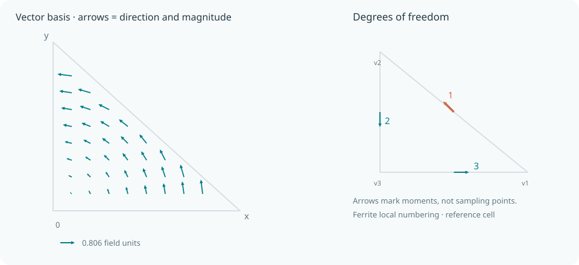
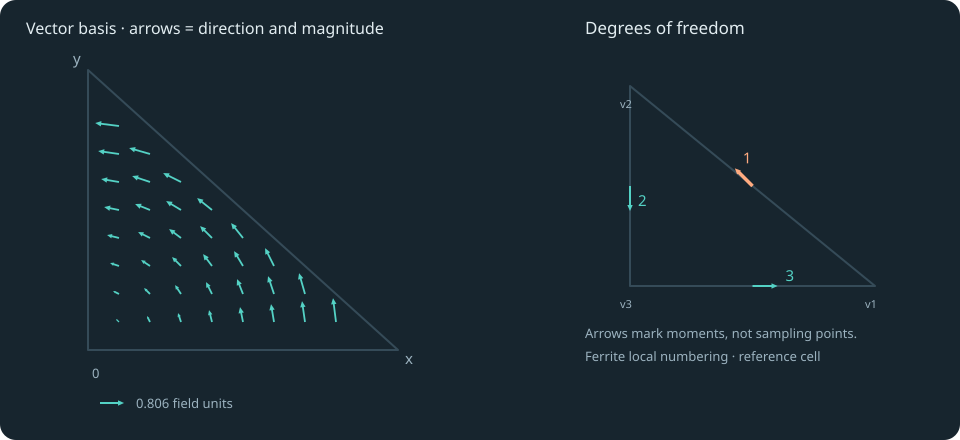
\[\ell_j(\varphi_{1})=\delta_{j,1},\qquad j=1,\ldots,3.\]
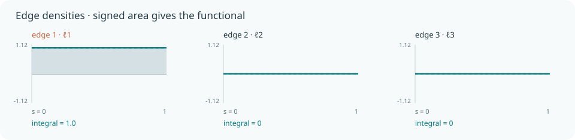
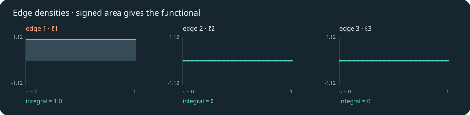
{kind=link}
{kind=link}
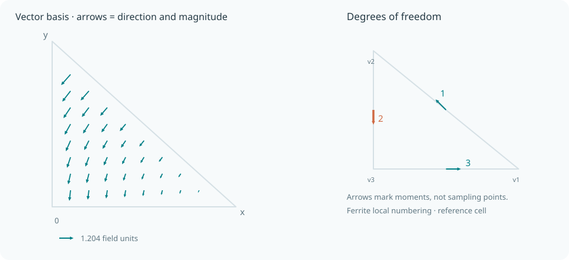
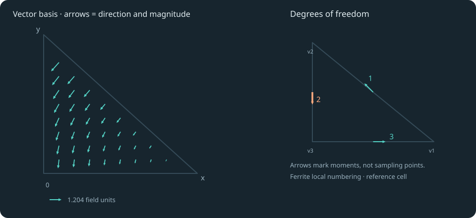
\[\ell_j(\varphi_{2})=\delta_{j,2},\qquad j=1,\ldots,3.\]
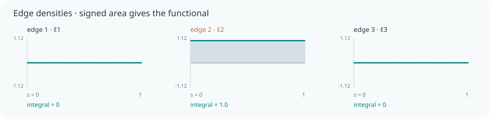
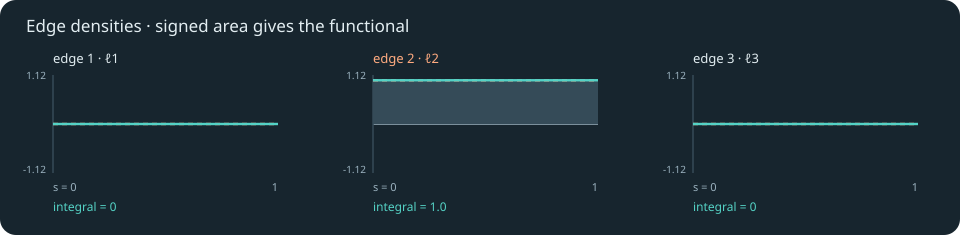
{kind=link}
{kind=link}
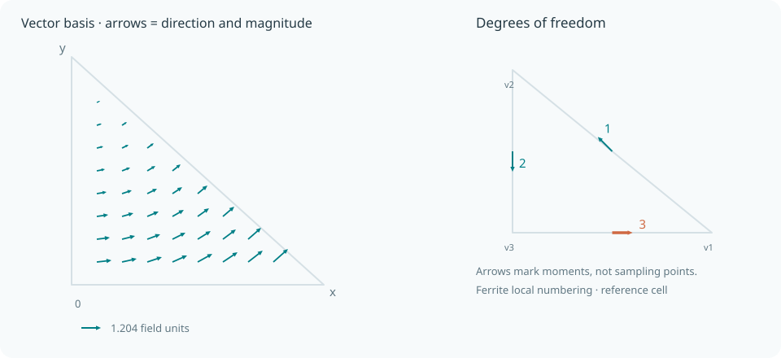
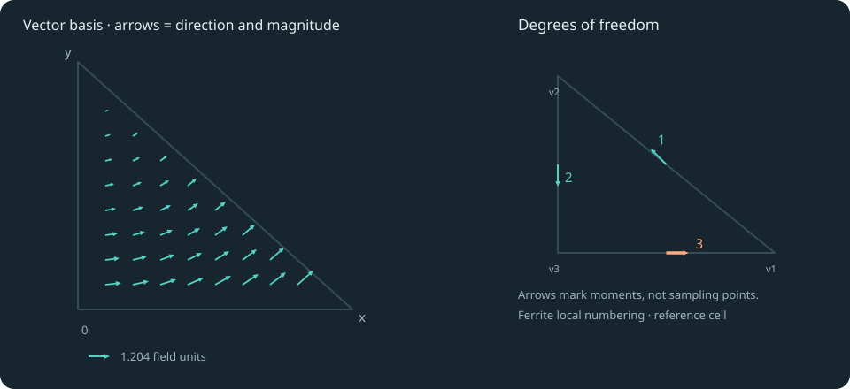
\[\ell_j(\varphi_{3})=\delta_{j,3},\qquad j=1,\ldots,3.\]
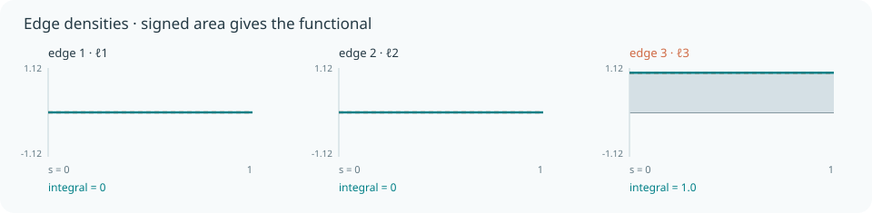
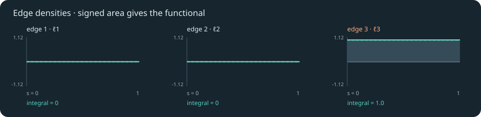
{kind=link}
{kind=link}
Definition
The reference cell is
\[\widehat K = \{(x,y):x,y\geq0,\ x+y\leq1\}.\]
The local approximation space is
\[[\mathcal P_0]^2 \oplus \operatorname{span}\{(-y,x)^{\mathsf T}\}\]
The degrees of freedom are the linear functionals
\[\ell_e(\boldsymbol v)=\int_e \boldsymbol v\cdot\boldsymbol t_e\,\mathrm ds\]
The basis is dual to these functionals:
\[\ell_i(\varphi_j)=\delta_{ij},\qquad I_h f=\sum_{i=1}^{n}\ell_i(f)\,\varphi_i.\]
Reference edges follow Ferrite's local vertex ordering. Linear edge weights use the parameter $s\in[0,1]$ from the first vertex to the second.
Under a cell map $F$ with Jacobian $J$, the basis uses the covariant Piola transform:
\[\boldsymbol v\circ F=J^{-\mathsf T}\widehat{\boldsymbol v}\]
Ferrite's order 1 is the lowest-order first-kind Nédélec element (polynomial subdegree 0 in DefElement). Tangents follow vertex 1→2, 2→3, 3→1. Covariant Piola mapping preserves these circulation integrals.
Use in Ferrite
using Ferriteip = Nedelec{RefTriangle, 1, 2}()getnbasefunctions(ip) # 3Ferrite.dof_functionals(ip) # functional kinds in local dof orderSee dof functionals for the API, interpolations for supported variants, and Nédélec · first kind on DefElement for the wider family. Return to the element atlas.